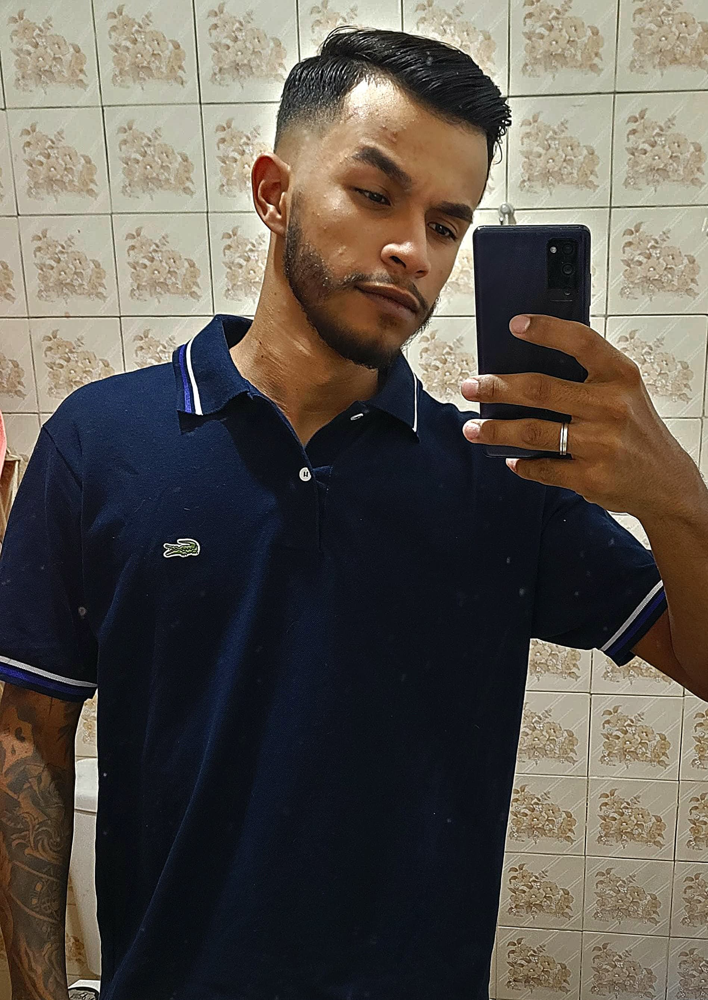

Desenvolvedor web formado em Análise e Desenvolvimento de Sistemas pela Universidade Anhembi Morumbi. Atualmente cursando Engenharia Front-End pela EBAC e desenvolvendo competências em tecnologias como HTML5, CSS, JavaScript, jQuery, Git, etc.. Meu foco é criar interfaces eficientes e funcionais para a web, com especial atenção à usabilidade e à experiência do usuário.